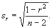
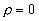
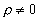
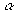
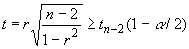
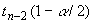

Ёмпирический коэффициент коррел€ции служит оценкой своего генерального параметра и как величина случайна€ сопровождаетс€ ошибкой

ќтношение выборочного коэффициента коррел€ции к своей ошибке служит критерием дл€ проверки нулевой гипотезы Ч предположени€ о том, что в генеральной совокупности этот показатель равен нулю, т.е.  . онкурирующа€ гипотеза имеет вид , поэтому критическа€ область Ч двусторонн€€.
Ќулевую гипотезу отвергают на прин€том уровне значимости  , если
,
где  Ч критическа€ точка распределени€
—тьюдента с уровнем значимости  и числом
степеней свободы k=nЦ2. ≈е значение можно
вычислить в MS Excel по формуле
и числом
степеней свободы k=nЦ2. ≈е значение можно
вычислить в MS Excel по формуле
=—“№ёƒ–ј—ѕќЅ–( ; n-2)
; n-2)